Les problème de plus court trajet sont souvent difficiles... En voici quelques uns plutôt faciles.
Deux villages assimilés à deux points A et B sont situés de part et
d’autre d’une rivière assimilée à deux droites parallèles D1 et D2.
Où doit-on placer un pont PQ (perpendiculairement aux berges) sur la
rivière pour minimiser le trajet allant de A à B ?
On veut que le trajet AP+PQ+QB soit minimum, on remarque que dans le trajet
PQ est constant et est égal à la largeur de la rivière. On
dessine le parallélogramme APQR et ainsi, AP+PQ=AR+RQ.
On a donc :
AP+PQ+QB= AR+RQ+QB où AR=PQ=cste
La solution est maintenanant évidente : pour rendre minimum RQ+QB il suffit
de choisir A,Q,B alignés.
Le dessin avec Xcas :
On clique deux points A à gauche de x=−1 et B à droite
de x=1.
D1:=droite(-1,-1+i); D2:=droite(1,1+i); R:=translation(2,A); Q:=inter(droite(B,R),D2)[0]; P:=translation(-2,Q); segment(A,P); segment(Q,P); segment(R,B); segment(R,A);
On peut ensuite faire bouger les points A ou B et visualiser les trajets APQB et ARQB.
Deux villages assimilés à deux points A et B sont situés de part et
d’autre de deux rivières, l’une est assimilée à deux droites
parallèles D1 et D2 et l’autre est assimilée à deux droites
parallèles D3 et D4.
Où doit-on placer deux ponts P1P2 et P3P4 sur les rivières
(perpendiculairement aux berges) pour minimiser le trajet allant de A à
B.
?
On fait le dessin avec Xcas :
On clique deux points A en bas à gauche de l’écran et B
en haut et à droite de l’écran et on tape :
assume(a:=1); D1:=droite(-2,-2+i); D2:=droite(-1,-1+i); D3:=droite(-1,a-1-i); D4:=droite(0,a-i); R:=translation(1,A); segment(A,R); Q:=translation(-(1+a*i)/(1+a^2),B); segment(B,Q); P2:=inter(droite(R,Q),D2)[0]; P1:=translation(-1,P2); P3:=inter(droite(R,Q),D3)[0]; P4:=translation((1+a*i)/(1+a^2),P3); segment(A,P1); segment(P1,P2); segment(P2,P3); segment(P3,P4); segment(P4,B); segment(R,P2); segment(P3,Q);
Il reste à observer le dessin en faisant bouger a ou A
ou B pour voir que :
AR=AP1=largeur d’une rivière
BQ=BP4=largeur de l’autre rivière
AP1+P1P2+P2P3+P3P4+P4B=AR+RP2+P2P3+P3Q+QB=AR+RQ+QB
et comprendre comment on fait la construction des deux ponts.
Soient une droite d et deux points A et B. On veut
minimiser la distance AM+MB lorsque M∈d.
Si les deux points sont de part et d’autre de d, c’est facile on trace
la droite AB,
si les deux points sont situés
dans le même demi-plan défini par d, on se raméne à la
situation précédente en prenant le symétrique C de B par
rapport à d.
Ainsi, AM+MB=AM+MC et A et C sont de part et d’autre
de d.
Le dessin avec Xcas :
On clique deux points A et B à droite
de x=−1.
d:=droite(-1,-1+i); C:=symetrie(d,B); M:=inter(droite(A,C),d)[0]; segment(A,M); segment(M,B); segment(C,M); N:=element(d); segment(A,N); segment(N,B); segment(C,N);
On peut ensuite faire bouger les points N ou B et visualiser les trajets AMB et AMC en les comparant à ANB et ANC.
Soient deux droites d1, d2 et deux points A et B. On veut
minimiser la distance AM+MN+NB lorsque M∈d1 et
N∈d2.
Les deux droites définissent quatre portions de plan (I,II,III,IV)
(I et III étant opposés par le sommet).
Il y a plusieurs cas à distinguer et selon la position de A et B
par rapport à ces portions de plan. Selon les cas pour trouver la solution
il faut tracer le symétrique A1 de A par
rapport à d1 et le symétrique B2 de B par
rapport à d2, puis tracer soit AB, soit AB2,
soit A1B, soit A1B2.
Ici le vecteur MN est constant car il est parallèle à
d il est de longueur constante L est a la même direction que le vecteur
ab où a et b sont les projection orthogonales de A
et B sur d.
Soit R le translaté de A par le vecteur MN. On a donc
AMNR est un parallélogramme et AM=RN et AR=MN.
Le trajet a minimiser est donc : AM+MN+NB=RN+AR+NB=AR+RN+NB.
Puisque A et R sont fixes il faut minimiser RN+NB.
Deux cas de figures :
Soient deux points A et B.
Un point M se déplace sur le cercle C de centre O et de
rayon 1. On choisit A et B pour que la droite AB
ne coupe pas le cercle C.
On cherche dans ce cas, à minimiser le trajet AMB.
Avec Xcas on va faire apparaître sur le même écran, le dessin
géométrique et le graphe de la fonction longueur(AM)+longueur(MB)-2
lorsque M varie (on enlève 2 pour pouvoir voir
le graphe en entier).
On régle la fenêtre graphique pour voir :
[-3.5,6.5] × [-1,4.4]
On clique sur deux points pour définir A et B.
On tape :
C:=cercle(0,1); t:=element(0..2*pi); M:=point(exp(i*t)); // ou M:=element(C,t); L(A,B,t):=evalf(longueur(A,exp(i*t))+longueur(B,exp(i*t))); G:=plotfunc(L(A,B,x)-2,x); N:=element(G,t); bissectrice(M,A,B); exbissectrice(M,A,B)
Ensuite lorsque l’on fait bouger t les points M et N bougent,
l’un sur le cercle C, l’autre sur le graphe G et l’on peut voir que
le minimum est atteint quand la bissectrice de l’angle M passe par
O.
On peut aussi faire varier B pour voir ce qu’il se passe quand la droite
AB coupe C c’est à dire quand la solution est evidente...
Cas particulier
On peut démontrer que lorsque le triangle OAB est isocéle de sommet
O le point M du cercle C qui rend le trajet AM+MB
minimum se trouve sur la bissectrice intérieure de l’angle
AMB. En effet soit deux points N1 et N2
du cercle C symétriques par rapport à cette bissectrice (qui est
aussi la médiatrice de AB). On a donc AN1=BN2 et AN2=BN1
et donc AN1+N1B=AN1+AN2.
Soient I le milieu de N1N2 et J le milieu de AB.
Les points O, I, M, J sont tous sur la médiatrice de AB et
puisque JI>JM (I milieu de la corde N1N2 et
J milieu de l’arc N1N2) et on en déduit que AI>AM.
AN1 +AN2=2AI et
donc d’aprés l’inégalité triangulaire on a 2AI<AN1+AN2 et donc
AM+MB=2AM<2AI<AN1+AN2 ce qui prouve que AM+MB est minimum.
Soit un triangle ABC et CM la bissectrice intérieure de l’angle C.
On pose a=CB, b=CA et m=CM. Calculer en fonction de a et b.
On se donne trois longueurs a, b et m. On veut construire le triangle
direct ABC dont m est la longueur de la bissectrice de l’angle des
côtés a et b.
A quelle condition cela est-il possible ?
Lorsque cela est possible, faire cette construction avec Xcas comme si on
utilisait le règle et le compas.
Une solution
On fait le dessin en tapant par exemple :
A:=point(4); B:=point([1.536,1.865); C:=point(0); d:=bissectrice(C,A,B); M:=inter_unique(droite(A;N),d)
On obtient :
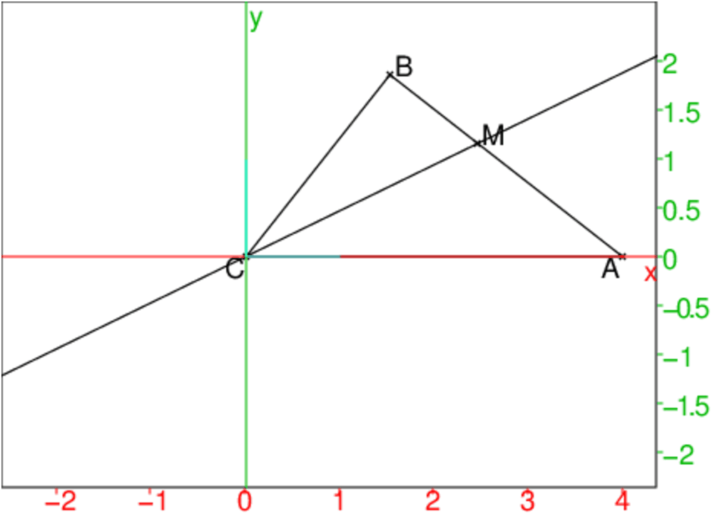
0n pose : a=CB, b=CA, m=CM, x=AM et y=BM
Puisque CM est la bissectrice de l’angle C on a :
x/y=b/a
D’après le théorème d’Al Kashi, on a :
x2=AM2=b2+m2−2bmcos(C/2) et
y2=BM2=a2+m2−2amcos(C/2)
Donc :
x2/y2=b2/a2=b2+m2−2bmcos(C/2)/a2+m2−2amcos(C/2)
Donc .
b2(a2+m2−2amcos(C/2))=a2(b2+m2−2bmcos(C/2))
et puisque m n’est pas nul on en déduit :
m(b2−a2)=2abcos(C/2)(b−a) ou encore
m=2abcos(C/2)/a+b ou encore
cos(C/2)=m(a+b)/2ab.
Puisqie l’angle C/2 est compris entre −π/2 et π/2, cos(C/2) est dans l’intervalle ]0,1[ donc la condition cherchée est :
m(a+b)/2ab<1 ou encore m<2ab/(a+b).
Comment faire la construcrtion du triangle ABC connaissant a, b et m ?
Avec Xcas, il suffirait de définir l’angle C par :
2acos(m(a+b)/2ab)
Mais on veut que cette construction se fasse comme avec la régle et le compas.
On va donc mettre en évidence l’égalité :
x/y=AM/BM=AC/BC=b/a
Pour cela on méne par B la parallèle à CM, cette parallèle coupe
AC en B1.
Puisque AM/BM=AC/BC et que
AM/BM=AC/CB1 on en déduit que :
CB1=CB=a et BB1=ma+b/b.
La longueur BB1 est facile à construire avec la règle et le compas, la
construction du triangle CBB1 est facile à construire avec la règle et
le compas puisqu’on connait la longueur de ses 3 côtés.
On en déduit ensuite le point A puisque B1,C,A sont alignés et CA=a.
D’où la construction du triangle ABC.
Avec Xcas, on tape :
supposons(a=[3.0,0,5,0.1]); supposons(b=[4,0,5,0.1]); supposons(m=[2.6,0,5,0.1]); A:=point(a); B1:=point(-b); C:=point(0); M1:=point(i*m); D:=inter_unique(droite(A,M1),droite(B1,-b+i)); d:=normal(factor(longueur(B1,D))); c1:=cercle(C,b):;c1; c2:=cercle(B1,d):;c2; B:=inter(c1,c2,M1); triangle(A,B,C,affichage=1); d:=bissectrice(C,A,B); M:=inter_unique(d,droite(A,B),affichage=1); normal(longueur(C,M));
On obtient :
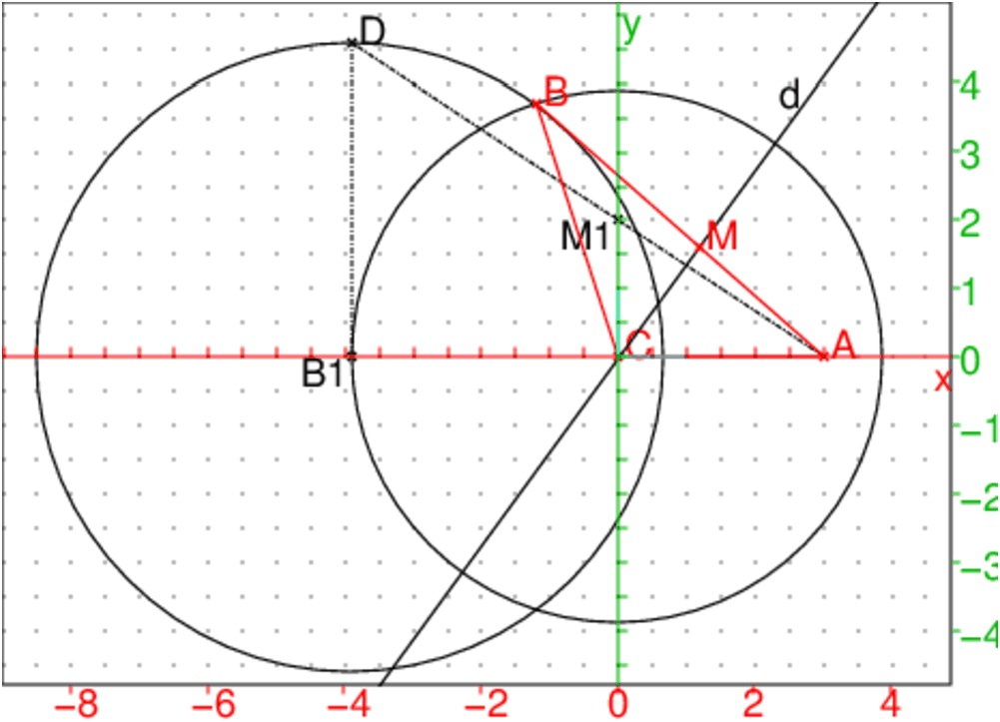
On voit :
en noir la construction de la longueur ma+b/b (on a
CM1=m et B1D=ma+b/b.
en rouge le triangle ABC et M le pied de la bissectrice intérieure de
l’angle C et
normal(longueur(C,M)) renvoie m.
Deux villages assimilés à deux points A et B sont situés de part et
d’autre d’une rivière assimilée à deux droites parallèles D1 et D2.
Où doit-on placer un pont PQ sur la rivière pour que AP=QB, lorsque PQ
est perpendiculaire aux berges et P est sur la berge du côté de A ?
On remarque que PQ est constant et a pour norme
égal à la largeur de la rivière. Soit R le translaté de A dans la translation de vecteur PQ.
On a AR=PQ donc APQR est un
parallélogramme.
Donc AP=RQ. On veut avoir AP=BQ donc il faut que RQ=Bq c’est à dire que Q se trouve sur la médiatrice de RB. Donc Q est l’intersection de la
médiatrice de RB avec la berge se trouvant du côté de B.
Le dessin avec Xcas :
On clique deux points A à gauche de x=−1 et B à droite
de x=1, par exemple :
A:=point([-5/2,1,'affichage'=0]); B:=point([5,-2,'affichage'=0]); D1:=droite(-1,-1+i):;D1; D2:=droite(1,1+i):;D2; R:=translation(2,A); polygone_ouvert(A,R,Q,affichage=1); segment(R,B,affichage=ligne_tiret_point+ 4); d:=mediatrice(R,B); Q:=inter_unique(d,D2); P:=translation(-2,Q); polygone_ouvert(A,P,Q,B); supposons(a=[-2.86,-5,5,0.01]); p:=point(-1+i*a); q:=point(1+i*a); polygone_ouvert(A,p,q,B); segment(R,q,affichage=1); legende(-6+4i,"Ap="+string(evalf(longueur(A,p)))); legende(-6+3i,"Bq="+string(evalf(longueur(B,q))));
On peut ensuite faire bouger les points p et q et visualiser les
trajets ApqB et ARqB.
On obtient :
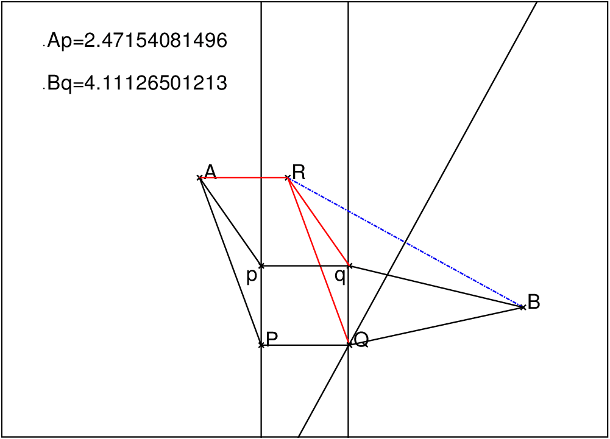
Quelles sont les transformations du plan qui transforme toute droite en une
droite parallèle ?
Ce qui veut dire que, si on connait un point A et son transformé
A1, le transformé B1 de B, est sur la parallèle à la
droite(A,B) passant par A1.
Si A et A1 sont confondus en O, B1 se trouve sur la
droite(O,B) : B,B1 et O sont alignes si O
est un point fixe.
On va essayer de déterminer ces transformations en les classant selon le
nombre de points fixes.
Soit T est une transformation du plan qui transforme toute droite en une
droite parallèle et si,
O:=point(0); t:=element(-2..5); A1:=element(droite(A,O),t); B1:=inter_droite(droite(B,O),parallele(A1,droite(A,B)));puis on fait bouger t et B.
O:=point(0); t:=element(-2..5); A1:=element(droite(A,O),t); B1:=inter_droite(parallele(A1,droite(A,B)),parallele(B,droite(A,A1)));puis on fait bouger t et B.
Charles Peaucellier est un général français (1832-1913).
On appelle inverseur tout système articulé qui permet de tracer
mécaniquement la figure inverse d’une figure plane donnée.
L’inverseur de Peaucellier est constitué d’un losange articulé AMBN de
côté a. Aux sommets A et B sont articulés deux tiges OA et OB
de longueur d avec d≥ a. Le point O est fixe.
Propriété :
Quand on fait bouger A et B, les points M et N restent alignés avec
O et sont inverses l’un de l’autre dans l’inversion de centre O et de
puissance d2−a2 .
On suppose que O est à l’origine, que d=3, a=2 et que M reste sur le
cercle de centre 1 et de rayon 1.
On tape dans un écran de géométrie :
O:=point(0); C:=cercle(0,point(2)):;C; M:=element(C) C1:=cercle(0,3.):; C2:=cercle(M,2.):; K:=inter(C1,C2):; A:=K[0]; B:=K[1]; segment(O,A,affichage=4); segment(O,B,affichage=4); N:=symetrie(droite(A,B),M); L:=lieu(N,M); quadrilatere(A,M,B,N,affichage=1);
On obtient :
On se met en mode Pointeur et on déplace M qui décrit le cercle. Le losange se déforme et N se déplace sur la droite inverse du cercle dans l’inversion de centre O et de puissance 5/2
Les points M et N restent alignés avec O car O,M et N sont
équidistants de A et B, ils sont donc sur la médiatrice de AB.
La puissance de O par rapport au cercle de centre A et de rayon AM=AN=a
est donc : OM.ON=OA2−AM2=d2−a2.
Revenons l’exemple précédent (O à l’origine, d=3, a=2).
Le transformé du cercle de centre 1 et de rayon 1 par l’inversion de centre
O et de puissance 32−22=5 est une droite puisque ce cercle passe par O.
Cette droite a pour équation x=5/2 puisque le point
du cercle d’abscisse 2 se transforme en le point de l’axe des x d’abscisse
5/2.
Soient 5 points A,B,C,E,F, On construit 3 points D,G,H par
translation : D (resp G) est le transformé de A (resp
E) dans la translation de vecteur BC et H est le
transformé de F dans la translation de vecteur BA.
Le pavé de base est P0=polygone([A,E,B,F,C,G,D,H]).
Pour vous convaincre, on va exécuter le script suivant qui se trouve dans
le fichier pavage1.cxx :
//un pave le polygone([A,E,B,F,C,G,D,H]) A:=point(-1.84,-1.83); B:=point(0.22,-1.93); C:=point(0,0); E:=point(-1,-2); F:=point(1.05,-0.857); D:=translation(C-B,A); G:=translation(C-B,E); H:=translation(A-B,F); nodisp(P0:=polygone(A,E,B,F,C,G,D,H)); nodisp(P1:=translation(B-A,P0)); P1; translation(B-C,[P0,P1]);
vous pouvez faire bouger les points A,B,C,E,F
Tout quadrilatère plan non croisé pave le plan.
Le pavé de base est Q:=quadrilatere(A,B,C,D)
Pour vous convaincre on va exécuter le script suivant qui dessine un quadrilatère quelconque A,B,C,E et ses représentants
(son symétrique par rapport au milieu O de AB et ses
translatés) formant un pavage.
//un quadrilatere quelconque pave le plan A:=point(-1.84,-1.83); B:=point(0.22,-1.93); AB:=segment(A,B); C:=point(1.05,-0.857); BC:=segment(B,C); D:=point(-0.0943,0.0178)+-0.0314-1.62*(i); CD:=segment(C,D); DA:=segment(D,A); O:=milieu(A,B); nodisp(Q:=quadrilatere(A,B,C,D)); nodisp(Q1:=symetrie(O,Q)); nodisp(Q2:=op(translation(D-B,[Q,Q1]))); Q; Q1; Q2; translation(C-A,[Q,Q1,Q2]);
On met ce script comme commandes dans un niveau de géométrie (si vous avez
tapé ce script est dans un èditeur de programme, en ayant pris soin de
n’écrire qu’une seule commande (terminée par ;) par ligne, vous
pouvez mettre ces commandes d’un coup de souris dans les lignes de commandes
dans un niveau de géométrie : on sélectionne le script et on clique sur
le numero d’une ligne de commandes dans un niveau de géométrie et cela
recopie le script à partir de cette ligne). Puis on coche le bouton
Step pour exécuter le script pas à pas.
Vous pouvez déformer ce quadrilatère en faisant bouger
l’un des points A,B,C,E.
Sur le même principe, on peut réaliser un pavage en remplacant les côtés
du quadrilatère par des lignes brisées admettant un centre de symétrie.
Pour vous convaincre on va exécuter le script suivant :
//un "quadrilatere" chaque cote est invariant par symetrie centrale A:=point(-1.84,-1.83); B:=point(0.22,-1.93); C:=point(1.05,-0.857); D:=point(-0.0943,0.0178) M:=milieu(A,B); N:=milieu(C,B); O:=milieu(C,D); P:=milieu(A,D); E:=point(-1.2,-2); F:=point(0.6,-1.8); G:=point(0.8,-0.5); H:=point(-0.5,0); nodisp(E1:=symetrie(M,E)); nodisp(F1:=symetrie(N,F)); nodisp(G1:=symetrie(O,G)); nodisp(H1:=symetrie(P,H)); nodisp(P0:=polygone(A,E,M,E1,B,F,N,F1,C,G,O,G1,D,H,P,H1,A)); P0; translation(A-C,P0);
vous pouvez faire bouger les points A,B,C,D,E,F,G,H.
On peut aussi écrire le programme pavage dans un éditeur de programmes qui va réaliser à partir du quadrilatère A,B,C,D, un pavage de l lignes et de c colonnes :
pavage(A,B,C,D,l,c):={
local k,LP,LQ,LLP,LLQ,,P,Q;
P:=polygone(A,B,C,D);
Q:=symetrie(milieu(A,B),P);
LP:=P;
LQ:=Q;
pour k de 1 jusque c-1 faire
P:=translation(C-A,P);
Q:=translation(C-A,Q);
LP:=LP,P;
LQ:=LQ,Q;
fpour;
LLP:=LP;
LLQ:=LQ;
LP:=[LP];
LQ:=[LQ];
pour k de 1 jusque l-1 faire
LP:=translation(B-D,LP);
LLP:=LLP,op(LP);
LQ:=translation(B-D,LQ);
LLQ:=LLQ,op(LQ);
fpour;
return [affichage(LLP,1+rempli),affichage(LLQ,2+rempli)];
}:;
On compile ce programme avec F9 et on ouvre un écran de géométrie :
On se met en mode point et on clique pour obtenir 4 points A,B,C,D.
On tape ensuite pavage( A,B,C,D,6,8)
On peut enlever les légendes A,B,C,D et les axes (bouton cfg,
puis décocher Montrer les noms et décocher Montrer les axes).
On se met en mode pointeur et on déplace un des points A,B,C,D.
ou bien on rajoute un paramètre t et on tape par exemple :
t:=element(0 .. 6.3,1.8,0.1)
pavage(0,1,0.5+i*0.5,0.25+i*0.75+0.25*sqrt(2)*exp(i*t),5,5)
et on fait bouger le curseur t
ou encore on fait une animation et on tape :
L:=seq(pavage(0,1,0.5+i*0.5,0.25+i*0.75+0.25*sqrt(2)*exp(i*t),5,5),t=0..6.3,0.1)
animation(L);
Le temps entre 2 images est défini dans cfg->animate.
On peut aussi ouvrir un niveau de géométrie 2-d et écrire les commandes :
A:=point(0); B:=point(1); C:=point(0.5+i*0.5); t:=element(0 .. 12.6,12.6,0.1); D:=point(,0.25+i*0.75+0.25*sqrt(2)*exp(i*t)); pavage(A,B,C,D,5,8)
Puis on fait bouger t et le pavage se déforme. Pour que cette déformation se fasse automatiquement, on utilise le menu M->Animation->Gaph off pour enlever le dessin, puis M->Animation->Creer animation pour créer l’animation (on vous demande combien vous voulez d’images (frame) différentes), la vitesse de défilement est définie par cfg->animate.
Le pavé de base est P0=polygone([A,E,B,F,C,H,J,G]) Pour vous convaincre on va exécuter le script suivant qui se trouve dans le fichier pavage3.cxx :
//un pave P0= polygone([A,E,B,F,C,H,J,G])([A,E,B,F,C,H,J,G]) A:=point(-1.84,-1.83); B:=point(0.22,-1.93); nodisp(triangle_equilateral(A,B,C)); E:=point(-1,-2); F:=point(0,0); G:=rotation(A,2*pi/3,E); H:=rotation(C,-2*pi/3,F); J:=rotation(C,-2*pi/3,B); nodisp(P:=[A,E,B,F,C,H,J,G]); nodisp(P0:=polygone(op(P))); nodisp(P1:=rotation(A,2*pi/3,P0)); nodisp(P2:=rotation(A,4*pi/3,P0)); [P0,P1,P2]; translation(B-J,[P0,P1,P2]); translation(B-rotation(A,2*pi/3,J),[P0,P1,P2]);
vous pouvez faire bouger les points A,B,E,F
Le pavé de base est P0=polygone([A,E,B,F,C,H,J,G]) Pour vous convaincre on va exécuter le script suivant qui se trouve dans le fichier pavage4.cxx :
//un pave P0=polygone([A,E,B,F,C,H,J,G]) A:=point(-1.84,-1.83); B:=point(0.22,-1.93); nodisp(C:=similitude(A,sqrt(2)/2,pi/4,B)); E:=point(-1,-2); F:=point(0,-1.2); G:=rotation(A,pi/2,E); H:=rotation(C,-pi,F); J:=rotation(C,-pi,B); nodisp(P:=[A,E,B,F,C,H,J,G]); nodisp(P0:=polygone(op(P))); nodisp(P1:=rotation(A,pi/2,P0)); nodisp(P2:=rotation(A,pi,P0)); nodisp(P3:=rotation(A,3*pi/2,P0)); [P0,P1,P2,P3]; translation(B-J,[P0,P1,P2,P3]); translation(2*(B-A),[P0,P1,P2,P3]); translation(B-rotation(A,pi,J),[P0,P1,P2,P3]);
vous pouvez faire bouger les points A,B,E,F
Si a=exp(2iπ/5)=cos(2π/5)+isin(2π/5),on a :
a5−1=(a−1)(a4+a3+a2+a+1)=0.
Comme a≠ 1, on a a vérifie :
a4+a3+a2+a+1=a2(a2+1/a2+a+1/a)=a2((a+1/a)2+(a+1/a)−1)=0
Comme a≠ 0, on a 2cos(2π/5)=a+1/a vérifie l’équation :
z2+z−1=0
On tape :
solve(z^2+z-1=0,z)
On obtient :
[1/2*(-1-(sqrt(5))),1/2*(-1+sqrt(5))]
Comme 2cos(2π/5)>0 et sin(2π/5)=√1−cos(2π/5)2 on tape :
normal(1-(1/4*(-1+sqrt(5)))^2)
On obtient :
(sqrt(5)+5)/8
et on en déduit que :
| cos(2π/5)= |
|
| sin(2π/5)= |
|
|
On aurait aussi pu taper en mode complexe :
solve(a+1/a=1/2*(-1+sqrt(5)),a)
On obtient comme valeur de a :
[1/4*(sqrt(5)-1+sqrt(2*sqrt(5)+10)*(i)),
1/4*(sqrt(5)-1-sqrt(2*sqrt(5)+10)*(i))]
Comme a=exp(2iπ/5)=cos(2π/5)+isin(2π/5), on a re(a>0 donc :
| a=cos(2π/5)+isin(2π/5)= |
|
On déduit de ce qui précède les valeurs de cos(π/5) et de
sin(π/5) puisque :
cos(2π/5)=2cos(π/5)2−1 et cos(2π/5)=1−2sin(π/5)2.
On tape :
normal(sqrt((sqrt(5)-1)/8+1/2))
On obtient la valeur de cos(π/5) :
(sqrt(5)+1)/4
On tape :
normal(-(sqrt(5)-1)/8+1/2)
On obtient sin(π/5)2:
(-(sqrt(5))+5)/8
Donc :
| cos(π/5)= |
|
| sin(π/5)= |
|
|
On tape :
R:=1; C:=cercle(0,R); A:=point(-R); B:=point(i*R); m:=milieu(0,B); c1:=cercle(m,R/2,affichage=2); segment(A,m,affichage=2); I:=inter(c1,segment(m,A)); r:=longueur2(A,I); c:=cercle(A,sqrt(r)); L:==simplify(inter(C,c)):; P:=L[0]; Q:=L[1]; segment(P,Q); c2:=cercle(P,longueur(P,Q)):; affichage(c2,4); M:=inter(C,c2,B); c3:=cercle(Q,longueur(P,Q)):; affichage(c3,4); T:=point(R); S:=inter(C,c3,T); polygone(T,M,P,Q,S,affichage=1);
On obtient :
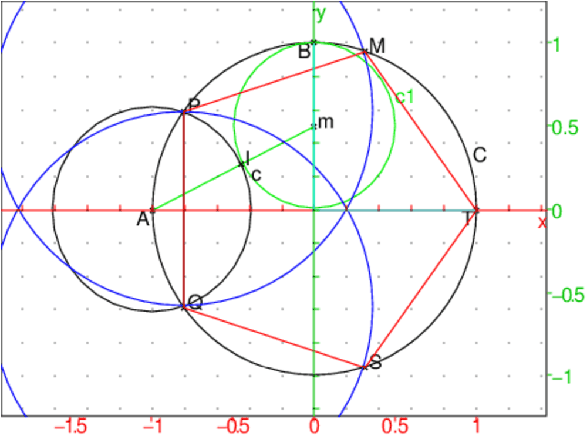
On trouve aussi que longueur2(A,I) vaut :
(-1-(-4*sqrt(5))/20)^2+(-(-2*sqrt(5)+10)/20)^2
On tape :
simplify(re(affixe(P)));
On obtient :
(-(sqrt(5))-1)/4
c’est la vaeur de −cos(π/5)
On tape :
simplify(im(affixe(P))^2);
On obtient:
(-(sqrt(5))+5)/8
c’est la vaeur de sin(π/5)2
P a donc comme coordonnèes : (−cos(π/5);sin(π/5))
Donc le polygone T,M,P,Q,S est bien un pentagone régulier.
On cherche tout d’abord la liste des sommets du polygone étoile à 5
branches: les pointes (resp les creux) se déduisent par rotation d’angle
2*π/5. On définit ainsi les sommets d’un polygone puis, on
affiche ce polygone avec le programme etoil. Si on remplit le polygone
etoil, il devient le polygone etoile.
On va utiliser 3 paramètres :
z0 le centre de l’étoile,
r le rayon de l’étoile,
a l’argument d’un "sommet en creux" de l’étoile,
Ces paramètres permettent de positionner l’étoile dans le plan.
On calcule la distance l d’un "sommet en creux" au centre de
l’étoile :
on sait ou on retrouve (puisque 1+2*cos(2*π/5)+2*cos(4*π/5)=0) que :
cos(2*π/5)=(√5−1)/4
cos(π/5)2=(3+√5)/8
cos(π/5)=(1+√5)/4
on a :
l=cos(2*π/5)/cos(π/5)
donc on a :
l:=r(3−√(5))/2
On a :
(√5−1)/2∼ 0.61803398875
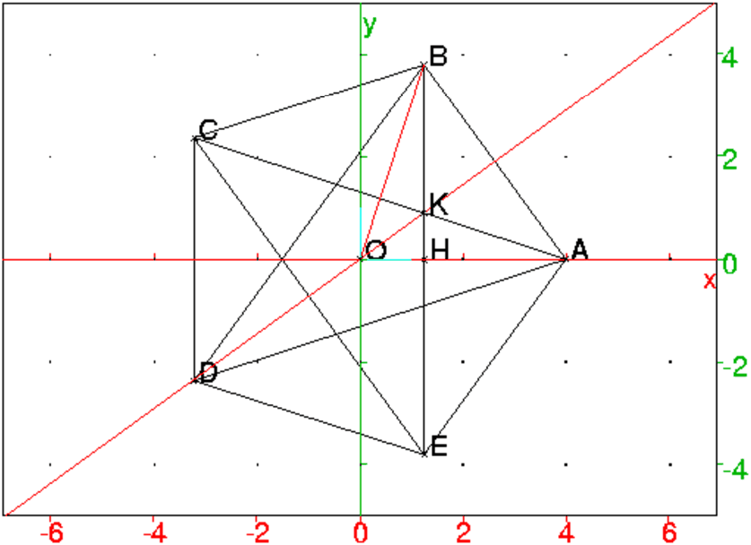
On tape :
etoil(z0,r,a):={
local j,l,somet,p,L,pa;
z0:=evalf(z0);r:=evalf(r);a:=evalf(a);
l:=evalf(r*(3-sqrt(5))/2);
somet:=[z0+l*exp(i*a),z0+r*exp(i*(a+evalf(pi)/5))];
L:=somet;
for (j:=1;j<5;j++){
L:=concat(L,rotation(z0,2*j*evalf(pi)/5,somet));
}
p:=polygone(L);
return p;
}:;
etoile(z0,r,a):={
return affichage(etoil(z0,r,a),rempli);
}:;
On tape :
etoile(0,1,0)
etoile(3,2,pi/5)
On obtient :
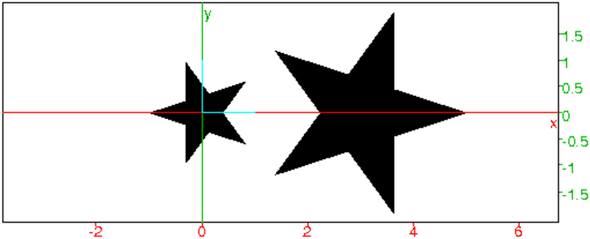
On veut faire le dessin :
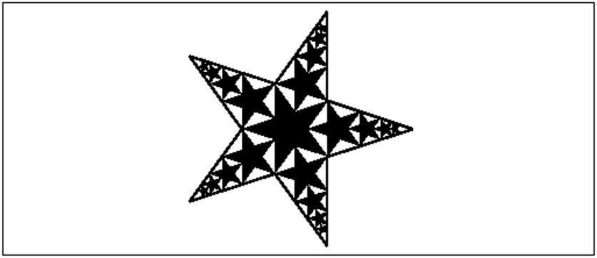
Si le rayon de l’étoile centrale est R et celui de l’étoile suivante est
r on a la relation :
r*sin(2*π/5)=R*sin(π/5) (R∼ 1.61803398875*r)
et on a trouvé que les sommets en "creux" sont situés sur un cercle de
rayon : l=R*(3−√5)/2
On sait que :
sin(2*π/5)2=1−cos(2*π/5)2=(5+√5)/8 et
sin(π/5)2=1−cos(π/5)2=(5−√5)/8
donc (5+√5)*r2=R2*(5−√5)=20/(5+√5) soit
r=2*R*√5/(5+√5)=2*R/(1+√5)=R*(√5−1)/2
De plus le centre de l’étoile suivante est situé à :
l+r=R*(3−√5)/2+R*(−1+√5)/2=R.
On tape :
etoiles(z0,r,a):={
local j,k,R,L,nr,nz0;
L:=[etoile(z0,r,a)];
R:=r;
for (j:=0;j<5;j++){
nr:=2*R/(1+sqrt(5));
nz0:=z0+R*exp(2*i*j*pi/5+i*a);
for (k:=1;k<5;k++){
L:=append(L,etoile(evalf(nz0),nr,a));
r:=nr;
nr:=2*r/(1+sqrt(5));
nz0:=nz0+r*exp(2*i*j*pi/5+i*a);
}
}
return L;
}:;
On tape :
etoiles(0,1,0);
affichage(etoil(0,2/(3-sqrt(5)),pi/5),line_width_3)
On obtient le dessin voulu.
On tape :
etoiles(0,1,pi/4);
affichage(etoil(0,2/(3-sqrt(5)),pi/5+pi/4),line_width_3)
On obtient le même dessin tourné de π/4.
Si on veut faire la même chose avec une ètoile à 7 branches on tape:
etoil7(z0,r,a):={
local j,l,somet,p,L,pa;
z0:=evalf(z0);
r:=evalf(r);
a:=evalf(a);
//l:=evalf(r*(3-sqrt(5))/2);
l:=evalf(r*cos(2*pi/7)/cos(pi/7));
somet:=[z0+l*exp(i*a),z0+r*exp(i*(a+evalf(pi)/7))];
L:=somet;
for (j:=1;j<7;j++){
L:=concat(L,rotation(z0,2*j*evalf(pi)/7,somet));
}
p:=polygone(L);
return p;
}:;
etoile7(z0,r,a):={
return affichage(etoil7(z0,r,a),rempli);
}:;
etoiles7(z0,r,a):={
local j,k,R,L,nr,nz0,nl,l;
L:=[etoile7(z0,r,a)];
R:=r;
l:=evalf(R*cos(2*pi/7)/cos(pi/7));
for (j:=0;j<7;j++){
nr:=evalf(R*sin(pi/7)/sin(2*pi/7));
nz0:=z0+(l+nr)*exp(2*i*j*pi/7+i*a);
for (k:=1;k<7;k++){
L:=append(L,etoile7(evalf(nz0),nr,a));
r:=nr;
nr:=r*sin(pi/7)/sin(2*pi/7);
nl:=evalf(r*cos(2*pi/7)/cos(pi/7));
nz0:=nz0+(nl+nr)*exp(2*i*j*pi/7+i*a);
}
}
return L;
}:;
Le logo de Xcas est obtenu en tapant :
etoilo(z0,r,a):={
local j,l,somet,p,L,pa;
z0:=evalf(z0);
r:=evalf(r);
a:=evalf(a);
l:=evalf(r*(3-sqrt(7))/2);
somet:=[z0+l*exp(i*a),z0+r*exp(i*(a+evalf(pi/7)))];
L:=somet;
for (j:=1;j<7;j++){
L:=concat(L,rotation(z0,2*j*evalf(pi/7),somet));
}
p:=polygone(L);
return p;
}:;
etoilog(z0,r,a):={
return affichage(etoilo(z0,r,a),rempli);
}:;
logox(z0,r,a,c):={
local j,k,R,L,nr,nz0;
L:=[affichage(etoilo(z0,r,a),c+rempli)];
R:=r;
for (j:=0;j<7;j++){
nr:=2*R/(1+sqrt(7));
nz0:=z0+R*exp(2*i*j*pi/7+i*a);
for (k:=1;k<7;k++){
L:=append(L,affichage(etoilo(evalf(nz0),nr,a),
c+(j+1)*k+rempli));
r:=nr;
nr:=2*r/(1+sqrt(7));
nz0:=nz0+r*exp(2*i*j*pi/7+i*a);
}
}
return L;
}:;
lx(z0,r):={
return(segment(z0+r*(-1-i),z0+r*(1+i)),
segment(z0+r*(1-i),z0+r*(-1+i)));
}:;
lc(z0,r):={
return (cercle(z0,r,pi/4,7*pi/4));
}:;
la(z0,r):={
return(segment(z0+r*(-1-i),z0+r*i),
segment(z0+r*(1-i),z0+r*i),
segment(z0+r*-0.5,z0+r*0.5));
}:;
ls(z0,r):={
return (segment(z0+r*(-1/2-i),z0-r*i),
segment(z0+r*(1/2+i),z0+r*i),
cercle(z0+r*i/2,r/2,pi/2,3*pi/2),
cercle(z0-r*i/2,r/2,-pi/2,pi/2));
}:;
logoxcas(z0,r,a,c):={
return logox(z0,r,a,c),
affichage(lx(evalf(z0-2*r*exp(i*a),r*0.2)),
line_width_3+c+4),
affichage(lc(evalf(z0-2*r*exp(-2*i*pi/7+i*a),0.2*r)),
line_width_3+c+3),
affichage(la(evalf(z0-2*r*exp(-4*i*pi/7+i*a),0.2*r)),
line_width_3+c+2),
affichage(ls(evalf(z0-2*r*exp(-6*i*pi/7+i*a),0.2*r)),
line_width_3+c+1);
}:;
On tape :
logoxcas(0,1,0,264);
On obtient les 7 branches de Xcas :
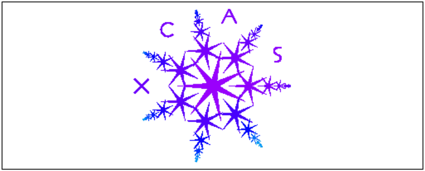
Voici ce qu’il faut taper pour avoir la carte de visite de Xcas :
logoxcas(0,0.9,pi/14,264);
legende(-2.2+3i,": le couteau suisse des mathematiques");
legende(-4.5+0.4i,"programmation",magenta);
legende(1.2+1.8i,"geometrie 2d",cyan);
legende(-4-1.2i," tableur formel",rouge);
legende(-3+1.8i,"calcul formel",bleu);
legende(2.3+0.4i,"geometrie 3d",jaune);
legende(1.7-1.2i,"geometrie tortue",vert);
legende(-1.1-2.1i,"documentation");
legende(-4.6+2.5i,"http://www-fourier.ujf-grenoble.fr
/~parisse/giac_fr.html");
rectangle(-5-2.2i,5-2.2i,5/8.5);
affichage([lx(-4+3.2i,0.2),lc(-3.5+3.1i,0.2),la(-3+3.2i,0.2),
ls(-2.5+3.1i,0.2)],epaisseur_ligne_3);
On obtient :
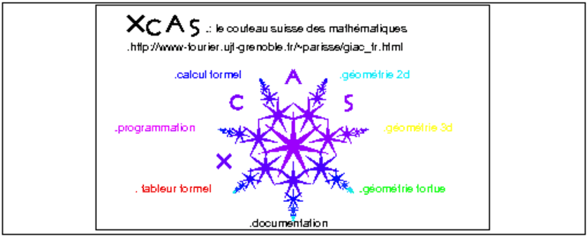
Voici ce qu’il faut taper pour avoir la carte de Noel de Xcas :
lx(z0,r):={
return(segment(z0+r*(-1-i),z0+r*(1+i)),
segment(z0+r*(1-i),z0+r*(-1+i)));
}:;
lc(z0,r):={
return (cercle(z0,r,pi/4,7*pi/4));
}:;
la(z0,r):={
return(segment(z0+r*(-1-i),z0+r*i),
segment(z0+r*(1-i),z0+r*i),
segment(z0+r*-0.5,z0+r*0.5));
}:;
ls(z0,r):={
return (segment(z0+r*(-0.6-i),z0+r*0.02-r*i),
segment(z0+r*(0.6+i),z0+r*i),
cercle(z0+r*i/2,r*1.02/2,pi/2,3*pi/2),
cercle(z0-r*1.01*i/2,r*1.02/2,-pi/2,pi/2));
}:;
ls1(z0,r):={
return (segment(z0+r*(-1-i),z0+r*0.55-r*i),
segment(z0+r*(1+i),z0-0.5*r+r*i),
segment(z0-0.55*r,z0+0.55*r),
cercle(z0-r*0.5+r*i*0.5,r*0.51,pi/2,3*pi/2),
cercle(z0+r*0.5-r*i*0.5,r*0.52,-pi/2,pi/2));
}:;
lm(z0,r):={
return polygone_ouvert(z0,z0+i*r,z0+(1+i)/2*r,z0+(1+i)*r,z0+r);
}:;
le(z0,r):={
return polygone_ouvert(z0+3*r/4,z0,z0+i*r,z0+r*i+r*3/4),
segment(z0+r*i/2,z0+r*i/2+3*r/4);
}:;
ly(z0,r):={
return polygone_ouvert(z0+r*i,z0+(1+i)*r/2,z0+r/2,
z0+(1+i)*r/2,z0+(1+i)*r);
}:;
lr(z0,r):={
return cercle(z0+(0.5+i*0.75)*r,r*0.25,-pi/2,pi/2),
polygone_ouvert(z0+r/2+i*r,z0+i*r,z0,z0+i*r/2,
z0+r/2+i*r/2,z0+r*3/4);
}:;
etoilo(z0,r,a):={
local j,l,somet,p,L,pa;
z0:=evalf(z0);r:=evalf(r);a:=evalf(a);
l:=evalf(r*(3-sqrt(7))/2);
somet:=[z0+l*exp(i*a),z0+r*exp(i*(a+evalf(pi/7)))];
L:=somet;
for (j:=1;j<7;j++){
L:=concat(L,rotation(z0,2*j*evalf(pi/7),somet));
};
p:=polygone(L);
return p;
}:;
etoilog(z0,r,a):={
return affichage(etoilo(z0,r,a),rempli);
}:;
logox(z0,r,a,c):={
local j,k,R,L,nr,nz0;
L:=[affichage(etoilo(z0,r,a),c+rempli)];
R:=r;
for (j:=0;j<7;j++){
nr:=2*R/(1+sqrt(7));
nz0:=z0+R*exp(2*i*j*pi/7+i*a);
for (k:=1;k<7;k++){
L:=append(L,affichage(etoilo(evalf(nz0),nr,a),
c+(j+1)*k+rempli));
r:=nr;
nr:=2*r/(1+sqrt(7));
nz0:=nz0+r*exp(2*i*j*pi/7+i*a);
}
}
return L;
}:;
logoxcas(z0,r,a,c):={
return logox(z0,r,a,c),
affichage(lx(evalf(z0-2*r*exp(i*a),r*0.2)),
line_width_3+c+4),
affichage(lc(evalf(z0-2*r*exp(-2*i*pi/7+i*a),0.2*r)),
line_width_3+c+3),
affichage(la(evalf(z0-2*r*exp(-4*i*pi/7+i*a),0.2*r)),
line_width_3+c+2),
affichage(ls(evalf(z0-2*r*exp(-6*i*pi/7+i*a),0.2*r)),
line_width_3+c+1);
}:;
cartev(z0,r):={
local L;
L:=lm(z0+1+4*i,r),le(z0+1+3*r/2+4*i,r),lr(z0+1+11*r/4+4*i,r),
lr(z0+1+4*r+4*i,r),ly(z0+1+21*r/4+4*i,r);
L:=L,lx(z0+1+2*i,r),lc(z0+1+2r+r/2+2*i,r),
la(z0+1+4*r+r/2+2*i,r),ls(z0+1+13*r/2+2*i,r);
return L;
}:;
support(z0,r):={
return segment(z0+r*(0.9+i*0.45),z0-r*(1.2+i*0.6)),
segment(z0,z0-2*r*i);
}:;
bulle(z0,r):={
return affichage(support(z0,r),264+epaisseur_ligne_3),
logoxcas(z0-3*r*i,0.42*r,0,264),cercle(z0-3*r*i,r);
}:;
cartev1(c1,c2):={
local L;
L:=affichage(cartev(-2,1),59+epaisseur_ligne_4),
rectangle(-4-i,8-i,0.67);
L:=L,logox(j,0.3,-pi/7,c1)$(j=-3..7);
L:=L,logox(j+6*i,0.3,pi/7,c1)$(j=-3..7);
L:=L,logox(-3+j*i,0.3,pi/7,c2)$(j=1..5);
L:=L,logox(7+j*i,0.3,pi/7,c2)$(j=1..5);
return L;
}:;
cartev2():={
local L;
L:=rectangle(-4.25-0.5*i,8-0.5*i,0.67),bulle(-0.5+4*i,1);
L:=L,bulle(1.5+5*i,1),bulle(3.5+6*i,1),bulle(5.5+7*i,1);
L:=L,affichage([lx(-2.5+5*i,0.5),lc(-2.5+3.5*i,0.5),
la(-2.5+2*i,0.5),ls1(-2.5+0.5*i,0.5)],
264+epaisseur_ligne_4);
L:=L,affichage([lm(-3.75+6.3*i,0.75),le(-2.25+6.3*i,0.75),
lr(-1+6.3*i,0.75),lr(0.25+6.3*i,0.75),
ly(1.5+6.3*i,0.75)],232+epaisseur_ligne_4);
return L;
}:;
sapin(z0,z1,t):={
local L,v;
L:=NULL;v:=z1-z0;
si abs(v)<0.2 alors L:=L, segment(z0,z1);retourne L; fsi;
L:=L,sapin(z0+v/4.,z1,t);
L:=L,segment(z0,z0+v*0.25);
L:=L,sapin(z0,z0+v*exp(i*t)*0.5,t);
L:=L,sapin(z0,z0+v*exp(-i*t)*0.5,t);
}:;
cartev3():={
retourne affichage([lx(-4.5+5*i,0.5),lc(-4.5+3.5*i,0.5),
la(-4.5+2*i,0.5),ls1(-4.5+0.5*i,0.5)],264+epaisseur_ligne_4),
affichage([lm(-5.75+6.3*i,0.75),le(-4.37+6.3*i,0.75),
lr(-3.06+6.3*i,0.75),lr(-1.72+6.3*i,0.75),
ly(-0.375+6.3*i,0.75)],232+epaisseur_ligne_4),
affichage(sapin(0,6.5*i,1),60),rectangle(-6.25-i,4-i,0.86),
logoxcas(0+6.5*i,0.45,0,269),
affichage(etoilog(-1.9+2.9*i,0.2,0),1),
affichage(etoilog(1.9+2.9*i,0.2,0),3),
affichage(etoilog(2.5+1.6*i,0.2,0),5),
affichage(etoilog(0.5+1*i,0.2,0),1),
affichage(etoilog(-1+0.5*i,0.2,0),3),
affichage(etoilog(-2.5+i*1.6,0.2,0),6);
}:;
Puis on tape :
cartev1(86,88)
On obtient une carte de Noel.
Puis on tape :
cartev2(),logoxcas(-2.5+3.5*i,0.5,0,264)
On obtient une carte de Noel.
Puis on tape :
cartev3()
On obtient une carte de Noel.
On veut réaliser :
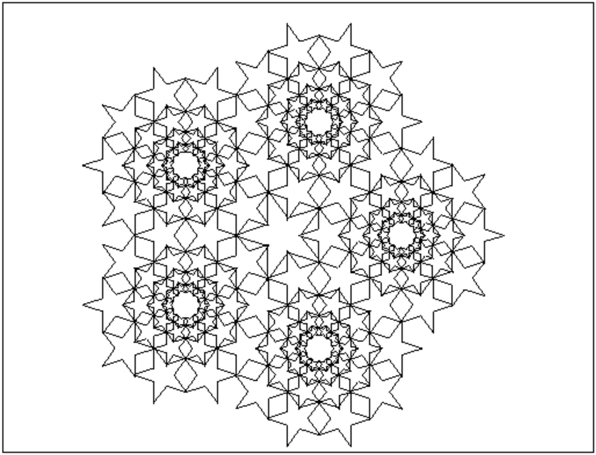
Pour cela, on va utiliser le programme précédent :
//z0 centre, r rayon de l'etoile,
//a argument d'un "sommet en creux" de l'etoile
etoil(z0,r,a):={
local j,l,somet,p,L,pa;
z0:=evalf(z0);r:=evalf(r);a:=evalf(a);
l:=evalf(r*(3-sqrt(5))/2);
somet:=[z0+l*exp(i*a),z0+r*exp(i*(a+evalf(pi)/5))];
L:=somet;
for (j:=1;j<5;j++){
L:=concat(L,rotation(z0,2*j*evalf(pi)/5,somet));
}
p:=polygone(L);
return p;
}:;
etoile(z0,r,a):={
return affichage(etoil(z0,r,a),rempli);
}:;
et les calculs précédents et écrire la procédure etoil10 de
paramètre c le centre de l’étoile pour dessiner :
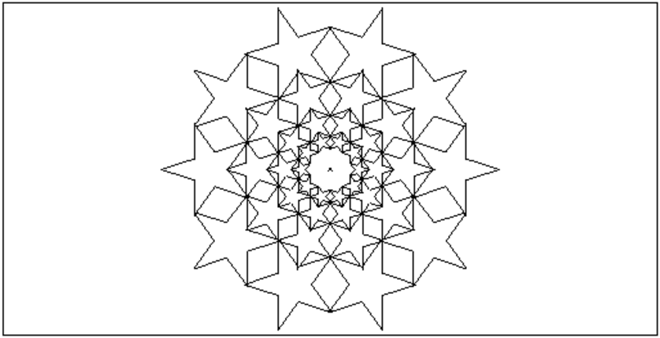
On pose :
a:=2*cos(π/5)=sin(2*π/5)/sin(π/5)≃ 1.61803398875
et on a :
R=a*r si r,R sont les rayons des cercles circonscrits à 2
étoiles consécutives,
Il faut maintenant trouver la relation entre le rayon r d’une ètoile et le
rayon ρ du cercle sur lequel on va placer le centre de 10 étoiles.
Soit la figure ci-dessous :
il y a un pentagone (il définit une étoile à 5
branches) de côté AB et de rayon r=OA.
Si on peut mettre 10 étoiles de rayon r sur le cercle de rayon ρ=IO
c’est que l’angle AIB=π/10 :
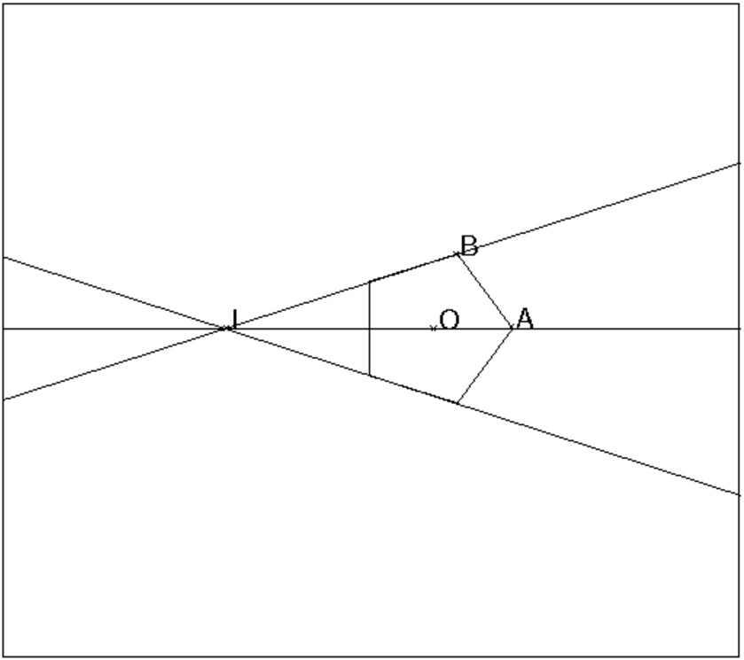
On cherche la relation qui existe entre IO=ρ et r=OA.
On a :
AB=2*r*sin(π/5) et IA=ρ+r donc :
AB/sin(π/10)= IA/sin(3π/5) donc :
2*r*sin(π/5)*sin(3π/5)/sin(π/10)=ρ+r
donc :
r=cr*ρ avec cr=sin(π/10)/2sin(π/5)*sin(3π/5)−sin(π/10)≃ 0.38196601125
On tape :
etoil5(c):={
local a,cr;
a:=evalf(2*cos(pi/5));
cr:=sin(pi/10.)/(2*sin(pi/5.)*sin(3*pi/5.)-sin(pi/10.));
return (etoil(c+exp(i*k*pi/5),cr,(k+1)*pi/5))$(k=0..9),
(etoil(c+a*exp(i*k*pi/5),cr*a,(k+1)*pi/5))$(k=0..9),
(etoil(c+a^2*exp(i*k*pi/5),cr*a^2,(k+1)*pi/5))$(k=0..9),
(etoil(c+1/a*exp(i*k*pi/5),cr/a,(k+1)*pi/5))$(k=0..9);
On tape :
a:=evalf(2*cos(pi/5));b:=a^3
cr:=sin(pi/10.)/(2*sin(pi/5.)*sin(3*pi/5.)-sin(pi/10.));
etoil5(b*exp(i*k*2*pi/5))
On obtient :
etoil5(b*exp(i*k*2*pi/5))$(k=0..4),etoil(0,b*cr,0)
On obtient :

On peut ainsi faire une sorte de pavage mais on est obligé de ruser pour qu’il
n’y ait pas de chevauchement :
etoil10 on enleve la dernière couronne à etoil5.
etoils5 est formé de 5 etoil5
etoils15 est formé de 1 etoil5 et de 4 etoil10 et
etoil5 est à la nième position.
On tape :
etoil10(c):={
local cr,a:=evalf(2*cos(pi/5));
cr:=sin(pi/10.)/(2*sin(pi/5.)*sin(3*pi/5.)-sin(pi/10.));
return (etoil(c+exp(i*k*pi/5),cr,(k+1)*pi/5))$(k=0..9),
(etoil(c+a*exp(i*k*pi/5),cr*a,(k+1)*pi/5))$(k=0..9),
(etoil(c+1/a*exp(i*k*pi/5),cr/a,(k+1)*pi/5))$(k=0..9);
}
:;
etoils5(c,t):={
local a,b,cr;
a:=evalf(2*cos(pi/5));
b:=a^3;
cr:=sin(pi/10.)/(2*sin(pi/5.)*sin(3*pi/5.)-sin(pi/10.));
return etoil5(c+b*exp(i*k*2*pi/5+i*t))$(k=0..4),
etoil(c,b*cr,t);
}:;
etoils15(c,t,n):={
local a,b,cr;
a:=evalf(2*cos(pi/5));
b:=a^3;
cr:=sin(pi/10.)/(2*sin(pi/5.)*sin(3*pi/5.)-sin(pi/10.));
return etoil10(c+b*exp(i*k*2*pi/5+i*t))$(k=n+1..n+4),
etoil(c,b*cr,t),etoil5(c+b*exp(i*n*2*pi/5+i*t));
}:;
On tape :
etoils5(0,0),(etoils15(2*b*sin(3*pi/10)*exp(i*pi/5+2*i*k*pi/5),pi/5,k))$(k=0..4)
On obtient :
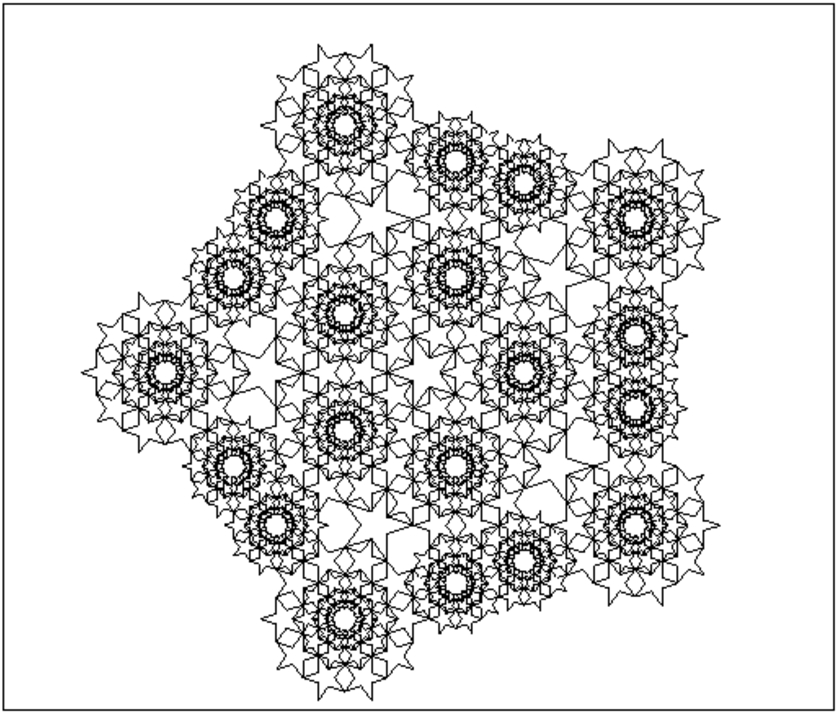
arcpoly(z0,r,a,b):={
local L;
return seq(z0+r*exp(i*t),t=a..b,0.05),z0+r*exp(i*b);
}:;
arc_poly(z0,r,a,b,ep,c):={
local L;
L:=z0+(r-ep)*exp(i*a),z0+r*exp(i*a),arcpoly(z0,r,a,b),
z0+(r)*exp(i*b),z0+(r-ep)*exp(i*b),arcpoly(z0,r-ep,b,a);
return affichage(polygone(L),c+rempli);
}:;
ujf(z0,r):={
local L;
L:=carre(z0,z0+r,affichage=48+rempli),carre(z0+r/3*(-1+2*i),z0+2*r*i/3,affichage=3+rempli);
L:=L,rectangle(z0+r/3*(-2+i),z0+r*i/3,0.5,affichage=1+rempli),rectangle(z0-r*i/3,z0+2*r/3-r*i/3,0.5,affichage=1+rempli);
L:=L,rectangle(z0+-r/3*(1+i),z0-r*i/3,3,affichage=1+rempli),arc_poly(z0-r,r,-pi/3,0,r/3,1);
L:=L,polygone(z0-r/6-r*i,z0+r/6-r*i,z0+r/3,z0,affichage=1+rempli);
L:=L,affichage(polygone(z0+r*(0.9+i),arcpoly(z0+17*r/12,17*r/12,pi-atan(5/5),pi),z0+r/3,
arcpoly(z0+17*r/12,13*r/12,pi,pi-atan(12/5))),1+rempli);
L:=L,legende(z0+r+i*2r/3,"UNIVERSITE"),legende(z0+r+0.1*i,"JOSEPH FOURIER"),legende(z0-r+i*1.1*r,"Grenoble I"),
legende(z0+r+i*0.1," ________________",affichage=1);
return(L);
}:;
On tape :
ujf(0,1)
On obtient :
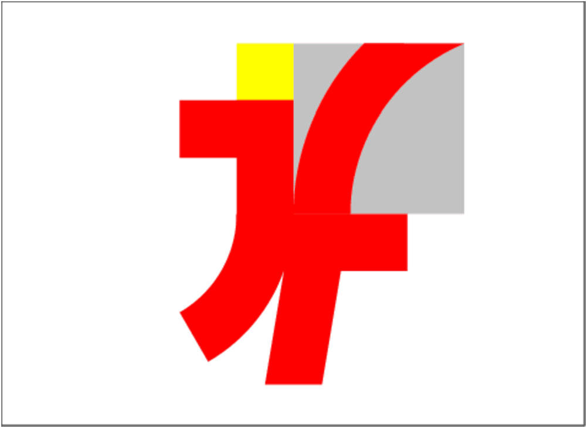
deca(O1,O2):={
local R,l,L,A,k;
R:=longueur(O1,O2);
l:=2*R*sin(pi/10);
L:=NULL;
A:=O2;
L:=L,A;
pour k de 1 jusque 10 faire
A:=A+2*(A-O1)*exp(3*i*pi/5)*sin(pi/10);
L:=L,A;
fpour;
return L;
}:;
penta1(O1,O2):={
local R,l,L,A,k;
R:=longueur(O1,O2);
l:=2*R*sin(pi/10);
L:=NULL;
A:=O1+2*(O2-O1)*sin(pi/10);
L:=L,A;
pour k de 1 jusque 13 faire
A:=O1+(A-O1)*exp(i*pi/5);
L:=L,A;
fpour;
return L;
}:;
penta2(O1,O2):={
local R,l,L,A,k;
R:=longueur(O1,O2);
l:=2*R*sin(pi/10);
L:=NULL;
A:=O1+4*(O2-O1)*sin(pi/10)^2;
L:=L,A;
pour k de 1 jusque 10 faire
A:=O1+(A-O1)*exp(i*pi/5);
L:=L,A;
fpour;
return L;
}:;
On tape :
point(0);
deca(point(0),point(1));
penta1(point(0),point(1));
penta2(point(0),point(1));
On obtient :
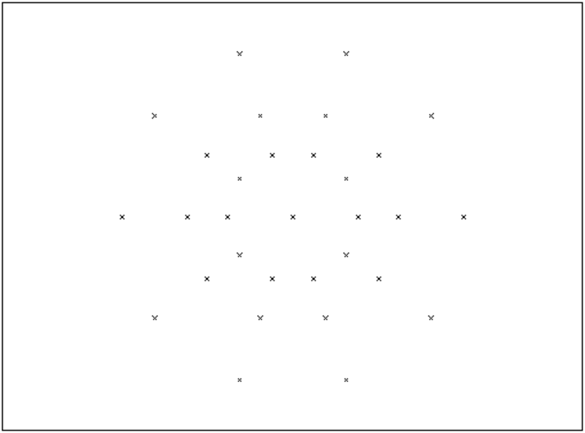
Cela permet de remplir un décagone avec des losanges en joignant à la souris
les points du dessin ci-dessus.
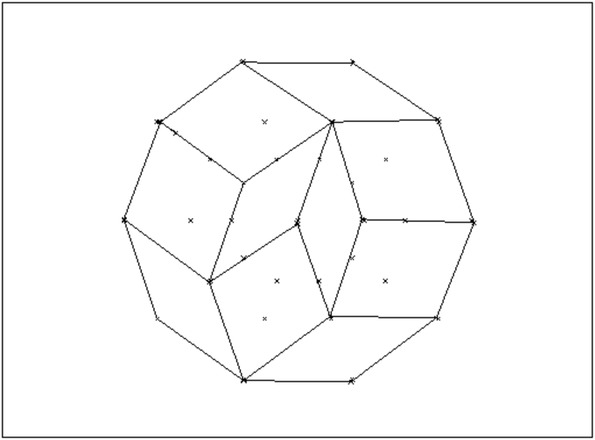
Puis de colorer le dessin avec la souris :
choisir le mode quadrilatere (Polygones->quadrilatere) et comme attribut de
l’objet le dessin plein (cliquer sur l’ellipse rempli et la couleur),
on obtient :
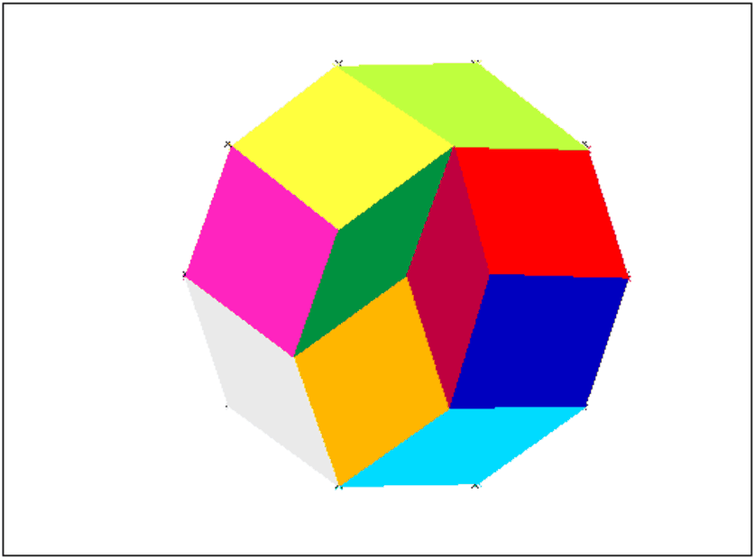
Voisi les programmes de différents remplissages :
vasa1(O1,O2):={
local L0,L1,L2,k,P,Q;
L0:=deca(O1,O2);
L1:=penta1(O1,O2);
L2:=penta2(O1,O2);
P:=NULL;
Q:=NULL;
pour k de 0 jusque 4 faire
P:=P,polygone(L0[2k],L0[2k+1],L0[2k+2],L1[2*k+1],affichage=rempli+32*k+58);
Q:=Q,polygone(O1,L1[2k+1],L0[2k+2],L1[2k+3],affichage=rempli+60+32*k);
fpour;
return P,Q;
}
:;
vasa2(O1,O2):={
local L0,L1,L2,k,P,Q;
L0:=deca(O1,O2);
L1:=penta1(O1,O2);
L2:=penta2(O1,O2);
P:=NULL;
Q:=NULL;
pour k de 0 jusque 3 faire
P:=P,polygone(L0[2k],L0[2k+1],L0[2k+2],L1[2*k+1],affichage=rempli+k);
fpour;
pour k de 0 jusque 2 faire
Q:=Q,polygone(O1,L1[2k+1],L0[2k+2],L1[2k+3],affichage=rempli+7*k+60);
fpour;
P:=P,polygone(O1,L1[7],L2[9],L1[11],affichage=rempli+4);
Q:=Q,polygone(L0[8],L0[9],L2[9],L1[7],affichage=rempli+81);
Q:=Q,polygone(L0[9],L0[10],L1[11],L2[9],affichage=rempli+88);
return P,Q;
}
:;
vasa3(O1,O2):={
local L0,L1,L2,k,P,Q;
L0:=deca(O1,O2);
L1:=penta1(O1,O2);
L2:=penta2(O1,O2);
P:=NULL;
Q:=NULL;
P:=P,polygone(L0[0],L0[1],L0[2],L1[1],affichage=rempli+0);
pour k de 2 jusque 3 faire
P:=P,polygone(L0[2k],L0[2k+1],L0[2k+2],L1[2*k+1],affichage=rempli+k);
fpour;
Q:=Q,polygone(O1,L1[5],L0[6],L1[7],affichage=rempli+74);
P:=P,polygone(O1,L1[1],L2[3],L1[5],affichage=rempli+1);
P:=P,polygone(O1,L1[7],L2[9],L1[11],affichage=rempli+4);
Q:=Q,polygone(L0[2],L0[3],L2[3],L1[1],affichage=rempli+60);
Q:=Q,polygone(L0[3],L0[4],L1[5],L2[3],affichage=rempli+67);
Q:=Q,polygone(L0[8],L0[9],L2[9],L1[7],affichage=rempli+81);
Q:=Q,polygone(L0[9],L0[10],L1[11],L2[9],affichage=rempli+88);
return P,Q;
}
:;
vasa4(O1,O2):={
local L0,L1,L2,k,P,Q;
L0:=deca(O1,O2);
L1:=penta1(O1,O2);
L2:=penta2(O1,O2);
P:=NULL;
Q:=NULL;
P:=P,polygone(L0[0],L0[1],L0[2],L1[1],affichage=rempli+0);
P:=P,polygone(L0[2],L2[2],L2[9],L1[1],affichage=rempli+1);
P:=P,polygone(L0[3],L0[4],L0[5],L1[4],affichage=rempli+2);
Q:=Q,polygone(L0[2],L0[3],L1[4],L2[2],affichage=rempli+74);
P:=P,polygone(L0[6],L0[7],L0[8],L1[7],affichage=rempli+3);
P:=P,polygone(L0[6],L1[7],L2[9],L2[6],affichage=rempli+4);
Q:=Q,polygone(L0[5],L0[6],L2[6],L1[4],affichage=rempli+60);
Q:=Q,polygone(L1[4],L2[6],L2[9],L2[2],affichage=rempli+67);
Q:=Q,polygone(L0[8],L0[9],L2[9],L1[7],affichage=rempli+81);
Q:=Q,polygone(L0[9],L0[0],L1[1],L2[9],affichage=rempli+94);
return P,Q;
}
:;
vasa5(O1,O2):={
local L0,L1,L2,k,P,Q;
L0:=deca(O1,O2);
L1:=penta1(O1,O2);
L2:=penta2(O1,O2);
P:=NULL;
Q:=NULL;
P:=P,polygone(L0[0],L0[1],L0[2],L1[1],affichage=rempli+0);
P:=P,polygone(L0[3],L0[4],L0[5],L1[4],affichage=rempli+1);
P:=P,polygone(L0[3],L1[4],L2[6],L2[3],affichage=rempli+2);
Q:=Q,polygone(L0[2],L0[3],L2[3],L1[1],affichage=rempli+74);
P:=P,polygone(L0[6],L0[7],L0[8],L1[7],affichage=rempli+3);
P:=P,polygone(L0[6],L1[7],L2[9],L2[6],affichage=rempli+4);
Q:=Q,polygone(L0[5],L0[6],L2[6],L1[4],affichage=rempli+60);
Q:=Q,polygone(L1[1],L2[3],L2[6],L2[9],affichage=rempli+67);
Q:=Q,polygone(L0[8],L0[9],L2[9],L1[7],affichage=rempli+81);
Q:=Q,polygone(L0[9],L0[0],L1[1],L2[9],affichage=rempli+88);
return P,Q;
}
:;
On tape :
vasa1(0,1),vasa2((2*sin(pi/10)+1)*exp(i*pi/5),2*sin(pi/10)*exp(i*pi/5)),
vasa3((2*sin(pi/10)+1)*exp(-i*pi/5),2*sin(pi/10)*exp(-i*pi/5)),
vasa7((2*sin(pi/10)+1)*exp(2*i*pi/5)-1,2*sin(pi/10)*exp(2*i*pi/5)-1)
On obtient :
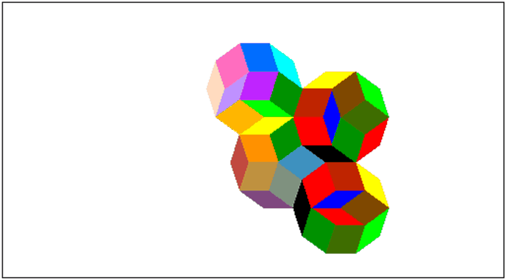
Ce problème aète donné aux olympiades académiques de 2005.
Un avion modèle réduit possède deux hélices de même longueur qui tournent dans un même plan perpendiculaire à leurs axes, et à la même vitesse. Comment choisir la distance entre leurs axes a et l’angle de départ b des 2 hélices pour que les deux hélices puissent tourner sans se heurter ?
On suppose les hélices de centres O1,O2 et de longueur 2.
On choisit comme paramètres, la
distance a des centres des 2 hélices, et la mesure b de l’angle
des 2 hélices. Plus précisemment, on note
l’hélice1 A1,A2 et l’hélice2 B1,B2 pour que l’angle
β=(A1,A2,B1,B2) soit de mesure
b∈ [0;π[.
On pourra tester différentes valeurs de a et b grâce aux
commandes :
a:=element(0..2);
b:=element(0..pi);
qui font apparaitre des curseurs permettant de modifier a ou b.
On va utiliser la commande animate qui permet de faire une animation.
Il faut pour cela créer, pour chaque hélice, une séquence (de 40 ou 48
éléments) contenant les différentes positions qui seront dessinées.
On définit pour la première hélice :
h1:=seq(segment(exp(i*(t+pi)),exp(i*t)),t,0,2*pi,pi/20)
et pour la deuxième hélice :
h2:=
seq(segment(a+exp(i*(t+pi)),a+exp(i*t)),t,b,2*pi+b,pi/20)
Donc on tape pour avoir 40 positions différentes et avoir au départ
a=sqrt(2) et b=pi/4 :
h1:=seq(segment(exp(i*(t+pi)),exp(i*t)),t=0..2*pi,pi/20):;
animation(h1);
a:=element(0..2,sqrt(2));
b:=element(0..pi,pi/4);
h2:=seq(segment(a+exp(i*(t+pi)),a+exp(i*t)),
t=b..2*pi+b,pi/20):;
animation(h2);
ou pour avoir 48 positions différentes et avoir au départ a=sqrt(3) et b=pi/3 :
h1:=seq(segment(exp(i*(t+pi)),exp(i*t)),t=0..2*pi,pi/24):;
animation(h1);
a:=element(0..2,sqrt(3));
b:=element(0..pi,pi/3);
h2:=seq(segment(a+exp(i*(t+pi)),a+exp(i*t)),
t=b..2*pi+b,pi/24):;
animation(h2);
Il y a des cas simples :
Il reste donc à étudier le cas 1<a≤ 2.
Supposons qu’à un moment donné les 2 hélices se touchent : par exemple
le point A1 touche l’hélice2 en M avec O2M=c : cela forme
un triangle de côtés
a,c,1 (0<c≤ 1 et d’angle b ou π−b opposé au côté a).
On a donc la relation :
a2=1+c2−2*c*cos(b)=(1−c)2+2*c*(1−cos(b))
ou la relation :
a2=1+c2+2*c*cos(b)=(1−c)2+2*c*(1+cos(b))
Si il y a collision c’est qu’il existe 0<c ≤ 1 vérifiant l’une de ces 2
équations du second degré en c de discriminant
Δ=cos(b)2−1+a2.
Puisque a>1, on a a>sin(b) donc Δ>0 : il y a donc 2 solutions de
signe contraire puisque le produit des racines vaut 1−a2<0, donc 0 se
trouve à l’intérieur des racines.
Si il y a collision c’est qu’il existe une racine comprise entre 0 et 1, donc
1 se trouve à l’extérieur des racines.
On a pour c=0, 1+c2−2*c*cos(b)−a2 (resp 1+c2+2*c*cos(b)−a2)
vaut 1−a2<0 puisque a>1 et,
pour c=1, on a 1+c2−2*c*cos(b)−a2 (resp 1+c2+2*c*cos(b)−a2)
vaut 2− 2cos(b)−a2 (resp2+ 2cos(b)−a2).
L’une de ces quantités est positive si il y a une solution entre 0 et 1,
donc
a2 ≤ 2−2cos(b)−a2=4*c2*sin(b/2)2 ou
a2 ≤ 2+2cos(b)−a2=4*c2*cos(b/2)2
Donc si il y a collision, c’est que a≤ 2*sin(b/2) ou
a≤ 2*cos(b/2).
Réciproquement supposons :
Si a≤ 2*sin(b/2) ou a≤ 2*cos(b/2), la construction d’un tel
triangle est possible ce qui prouve qu’il y a
collision entre les 2 hélices.
Donc si on a a>2*sin(b/2) et a>2*cos(b/2), on est sûr que la
collision n’est pas possible.
Cela veut dire que si l’on choisit a>2*max(sin(b/2),cos(b/2)), il
n’y aura pas de collision possible.
Par exemple :
pour b=π/2 on doit choisir a>√2,
pour b=π/3 on doit choisir a>√3.